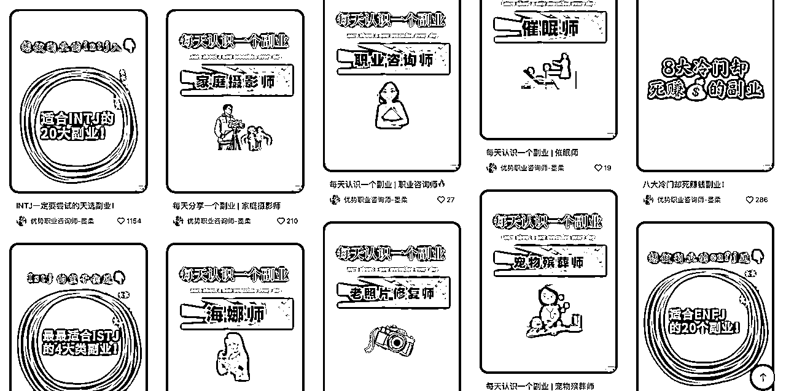
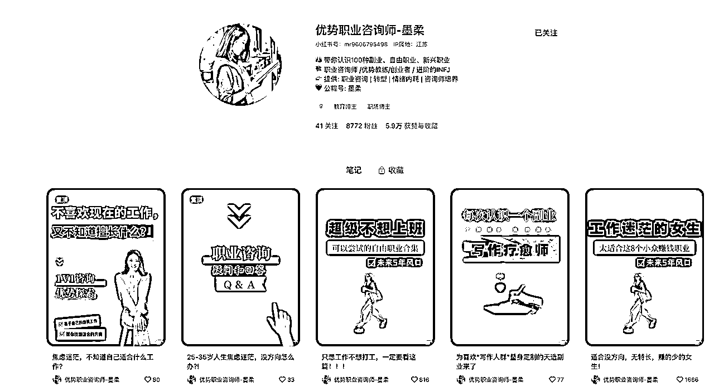
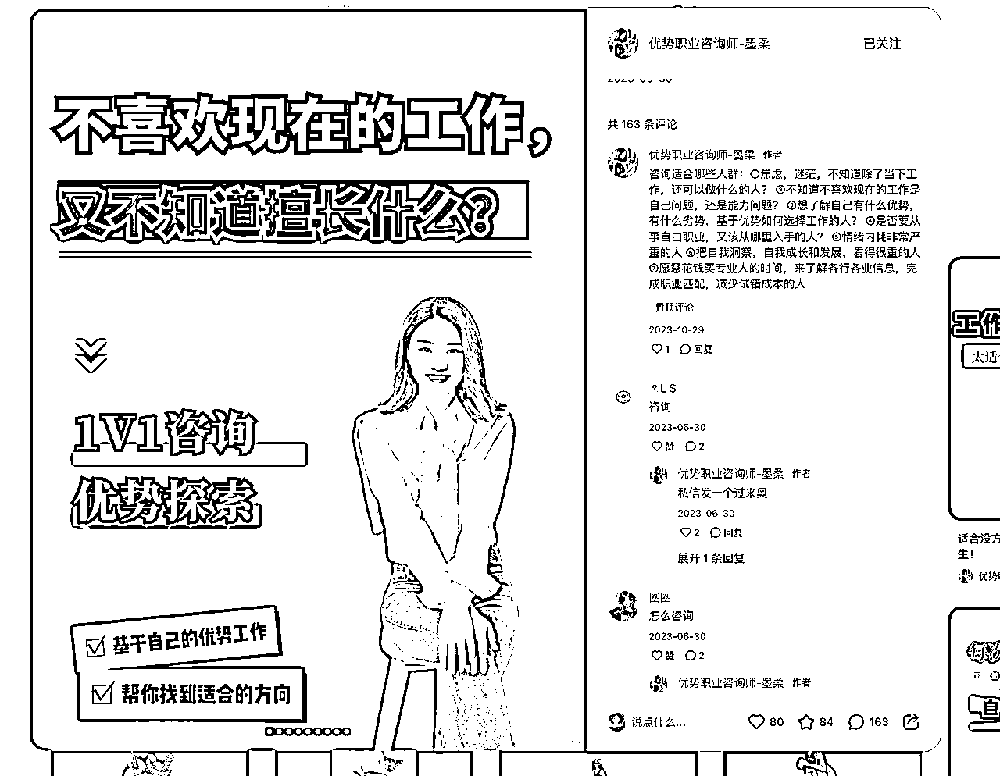
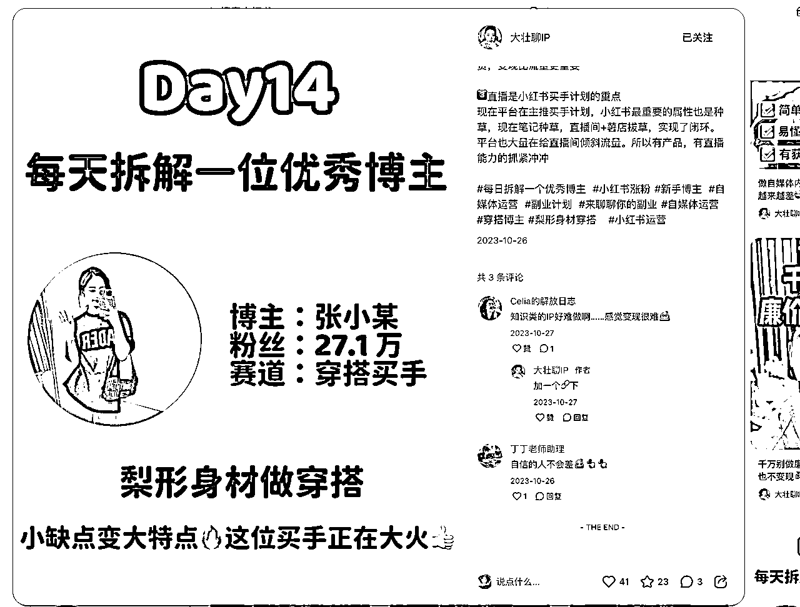
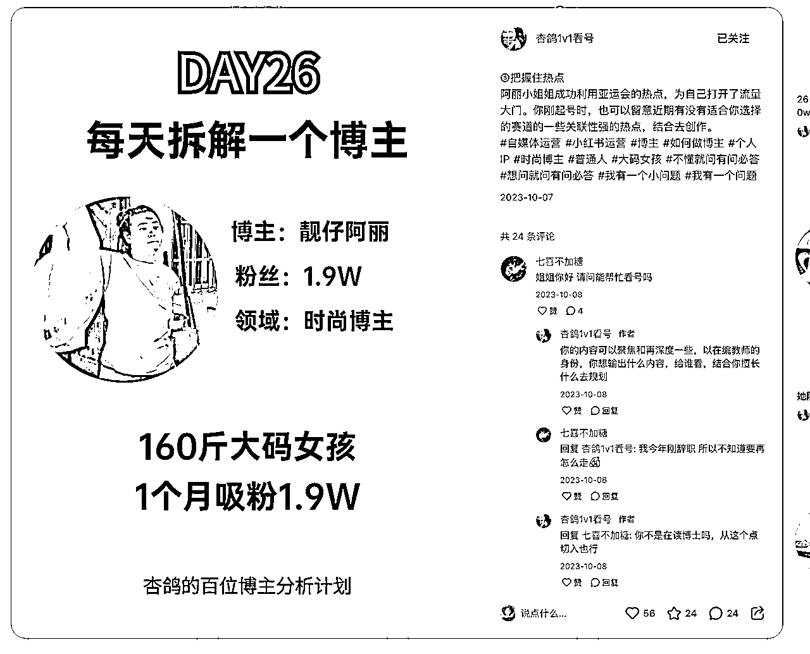

来源：https://uu16l0p1cs.feishu.cn/docx/ZbSLdZeW5oI1q8x2gXZcotILnxm
目标账号：
目前选定上述的几个账号，其中可以大致分类一下：
聊IP问题：
大壮聊IP • 小红书 / RED
杏鸽1v1看号 • 小红书 / RED
职业咨询类型：
https://www.xiaohongshu.com/user/profile/616d29ad0000000002018213

置顶笔记就是进行职业咨询的


用户可以在下面留言，博主就可以私信进入沟通
通过内容，用户会在下方求帮忙看看账号问题，博主会简单分析一下，之后引导用户私信


最后转移阵地，加微信进行转化
服务（IP定位及问题剖析+咨询）
通过小红书转化来的咨询订单，进行一对一的问题剖析，教人如何定位&赚钱
利润=收益-成本
成本：时间精力
收益：高客单价咨询服务费
属于低价转高价的模式，从问题咨询到陪伴成长群，卖的类型比较多
先梳理以下几个问题：
通过拆解别人的账号或拆解不同岗位类型的笔记，吸引用户留言，然后找到精准用户，从而使他添加微信，转移微信阵地，后续通过一次的问题咨询锁定愿意长期付费的用户，后续进入成长陪伴群，做长期付费用户。
可能放大程度看自己的时间精力有多少，前期靠一对一咨询做服务，后续可以收徒弟，发展下线。
前期需要较大的学历或相关工作背景，让用户相信你能指引我方向的。后续通过拆解优质的账号或拆解不同岗位类型的笔记，吸引用户留言，然后找到精准用户，从而使他添加微信，转移微信阵地，后续通过一次的问题咨询锁定愿意长期付费的用户，后续进入成长陪伴群，做长期付费用户。
但一旦客单量增加，需要考虑以团队模式，把这套方法论转变成让下属的人去做，自己做方向定位的，做战略方向领域。